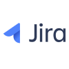
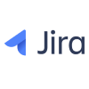

Current Work
Pure Biologics S.A. | Protein Group
Research and Development Specialist
11/2021 - present
Research and Development Assistant
10/2019 - 10/2021
Responsibilities:
- Expression and purification of recombinant proteins from mammalian systems
- Purification of biopharmaceuticals (proteins) with automated FPLC equipment (ÄKTA) using various chromatography methods, including affinity, charge and size-based separations(AC, IMAC, SEC)
- Protein analytics(e.g.: HPLC, DSF, WB, SDS-PAGE, glycosylation analysis, proteins formulation)
- Optimization of purification methods
- High-throughput expression screening (HTS)
- Endotoxinsremoval
- Cell culture and transfection
- Design and implementation of project tasks
- Results and data analysis
- Protocols and reports preparation
Skills:
- Team working
- Analytical skills
- Design experiment
- Planning
- Reporting
- MS Office
- Mammalian Cell Biology
- Sterile work
- Data analysis
- Time management
- Microbiology
- Multitasking
- Working under time pressure
- Work with protocols
- Literature review
- WRIKE
- Outlook
- SharePoint
- Trello
- Problem solving
- Prioritizing tasks
- Meticulousness
Courses
"100 Days of Code: The Complete Python Pro Bootcamp for 2023"
Description:
During the course, I created several projects. You can see them in the "PROJECTS" tab and on my GitHub. In these projects, I explore the technologies that appear in this course, and I also learn new ones on my own.
Technologies:
Python 3
PyCharm
Pandas
Tkinter
JSON
API
SQL
Jira Software
Visual Studio Code
GitHub
 

Development of Soft Skills by Trenergia (2022)
- Feedback and assertive communication
- Planning and managing personal development
Time Management Training (2019)
Moderation - methodology of group problem solving by Wrocław University of Technology (2017)
languages
Polish Native
English (B1+) Intermediate
Education
Higher School of Banking in Wrocław
Postgraduate studies - Finance and Accounting
10/2021 – 06/2022
Wrocław University of Science and Technology
MSc in Molecular Biotechnology and Biocatalysis
02/2018 – 07/2019
Biotechnology Engineer
10/2014 – 01/2018